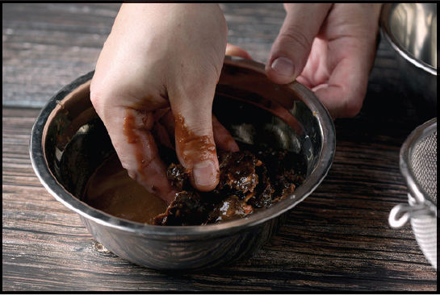
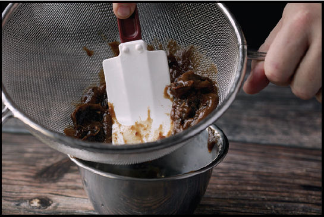

WORKING WITH TAMARIND
Tamarind is the fruit of a hardwood tree indigenous to Africa that has spread throughout Southeast Asia and South America. It produces large brown, pod-like fruits that contain a sticky, very tart pulp. When shopping for tamarind, you’re likely to see it in one of three forms:
•Tamarind concentrate is my last choice. It comes in plastic or glass jars. You can definitely use it in a pinch, but the flavor of concentrate is usually not particularly concentrated and lacks the punch of tamarind in its more natural forms.
•Whole tamarind fruit are your second-best option. They are finger-shaped pods about 1 inch in diameter and 6 inches long. They typically come packed in plastic-wrapped cardboard boxes. To use whole tamarind fruit, you must first break open the hard outer pods, then soak the pulpy fruit in warm water and strain out the resulting concentrated tamarind paste.
•Tamarind pulp sold in block form is the best way to buy tamarind. With most ingredients, I find that the closer you can get it to its natural state, the better the flavor. With tamarind, this is not the case—the block stuff is just as good as the whole pods, and significantly easier to work with.
Tamarind pulp can be found at any Asian supermarket and most Latin markets as well. It’s sold in plastic wrappers and typically stored at room temperature. Check the fresh produce aisle underneath the fresh produce display bins. Once you get it home and open the package, you can break off just as much as you need for a given recipe, rewrap the rest, and store it in the fridge for several months; its high acidity and sugar content make it an inhospitable environment for bacteria or molds to grow on. (I’ve never had a block of tamarind go bad on me.)
Tamarind contains lots of inedible fibers and seeds, so you need to prepare it with hot water before using it. Here’s how you do it.
Step 1 • Add Hot Water
Break off as much tamarind as you need, place it in a bowl, then add a roughly equal quantity of hot water.


Step 2 • Massage
Massage the tamarind with your fingertips to loosen the pulp. Keep going, breaking up any large masses of pulp you feel. In the end it should feel like very loose, squishy mud with fibers running through it (and, depending on the brand, some hard, woody seeds).
Step 3 • Strain It
Scrape the pulp out into a fine-mesh strainer set over a clean bowl, then, using a rubber spatula, push the pulp through the strainer, going back and forth and stopping to scrape the inside of the strainer free of excess fibers every once in a while until you’ve extracted as much concentrated pulp as you can. Discard the fibers and seeds.
Prepared tamarind pulp can be stored in the fridge for several weeks and can be used in place of lime or lemon juice in things like salad dressings, sauces, or cocktails.